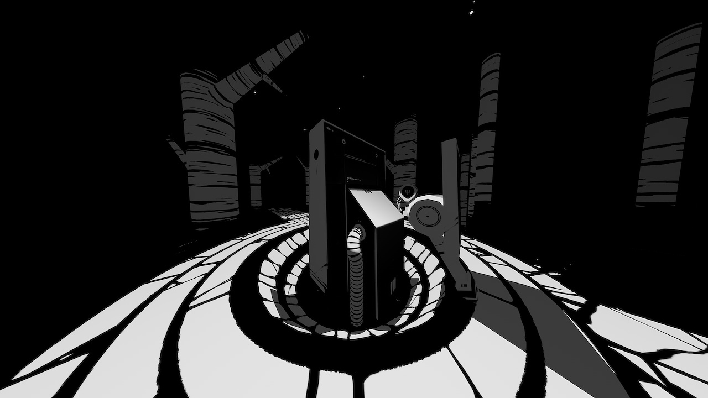
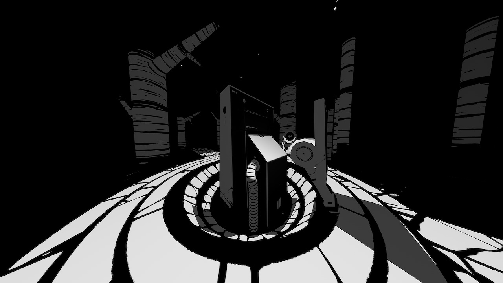

hiversaires
what is hiversaires?
Hiversaires is a point-and-click adventure game. Venture down entangled corridors, enter the dark world.
trailer
download
inspiration
The gameplay of Hiversaires is reminiscent of games like Myst, while the art draws inspiration from the manga Blame by Tsutomu Nihei.
Like Oquonie, this game is about being lost in place that is alien, with no instructions, no dialog, and no words of any kind.
production
Hiversaires was created while we lived in Japan. This was Devine's first game for iOS. It was an experiment, a gamble of sorts, it is why the production time was so short (2 months). It was Devine's first commercial release, as all the previous games and prototypes were available for free.
Devine was in-between jobs at the time, making it possible to work on this project full time.
Hiversaires was released on April 3rd 2013 on iOs, it was later ported to Android by Sven Bergström. The game was later taken off the Android store because of piracy. Many users would ask for support for pirated versions of the game, resulting in much lost time and frustration. In the end, Devine thought it better to not host the game in an unhealthy ecosystem like the Android store.
On February 27th 2018, Hiversaires was re-released on all desktop platforms (on itch.io), ported by friend and collaborator Rez Mason. That same year, we removed the game from the iOS store, in a conscious attempt to distance ourselves from Apple ecosystem. After looking at the trajectory of the development tools, namely the bloated development environment, we did not believe that it was possible for us to continue working on our games, while at sea with little connectivity for the Apple mobile platform.
We also could not reconcilliate pushing for environmentally conscious action, while supporting a company that fights against the Right to Repair, and create wasteful products. Instead, the game was published exclusively on the Itch.io store, a publishing platform in line with our values.
The game now runs on major desktop platforms.
screenshots
 
